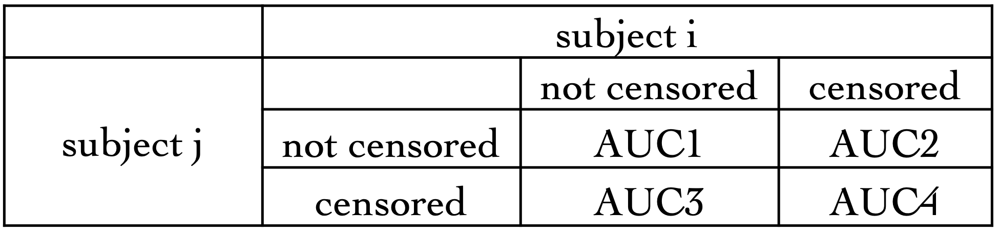
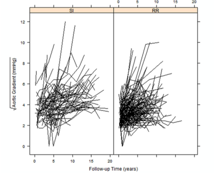
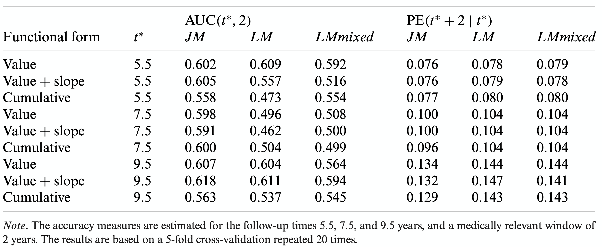

Paper Review Time-dependent ROCs and AUCs for censored endpoints, dynamic prediction via joint modeling and landmarking
 Image generated from: [R version 3.6.3]
Image generated from: [R version 3.6.3]
1. Introduction
In this project, we reviewed papers about time-dependent cox model, Therneau, T., Crowson, C., & Atkinson, E. (2013). Using time-dependent covariates and time dependent coefficients in the Cox model. Red, 2, 1., joint modeling with survival and longitudinal process, Hsieh, Fushing, Yi-Kuan Tseng, and Jane-Ling Wang. 2006. “Joint Modeling of Survival and Longitudinal Data: Likelihood Approach Revisited.” Biometrics 62 (4). Blackwell Publishing Inc: 1037-43.doi:10.1111/j.1541-0420.2006.00570.x., landmarking analysis, Dafni, U. (2011). Landmark analysis at the 25-year landmark point. Circulation: Cardiovascular Quality and Outcomes, 4(3), 363-371.
Apart from the model’s section, we also reviewed several papers to evaluate the prediction accuracy for the models above. Rizopoulos, D., Molenberghs, G., & Lesaffre, E. M. (2017). Dynamic predictions with time-dependent covariates in survival analysis using joint modeling and landmarking. Biometrical Journal, 59(6), 1261-1276. is the main one that we used to perform the simulation and real data analysis.
2. Modelings and Methods
In this section, we will introduce the three models that we reviewed, we also focused on the differences between the three models and the advantages and disadvantages of the three models.
2.1 Time dependent covariates Cox models
Before introducing the time-dependent covariates cox model, we want to refresh our memory on the proportional hazard model (cox model), which we define the hazard function as
$$\lambda(t|Z) = \lambda_0(t)\exp{\beta’ Z} $$
where the baseline hazard $\lambda_0(t)$ depends on time $t$ but not depends on the covariates $Z$ and the hazard ratio $e^{\beta’ Z}$ depends on covariates $Z$ but not depends on time $t$.
There are cases where if we measure some of the $Z_j$ over time, they may vary ( e.g. biomarkers)
Often time, a small fraction of the available biomarker information is used.
One example that motivated the time depends covariates cox model is the Stanford Heart transplant example, where a standard cox model was initially fit without consideration on the time-dependent covariate waiting time to get transplants which can be an important both in inference and prediction, the patients get the transplant earlier might have a higher survival probability due to the better condition of the early-stage patients.
When we have such time-dependent covariates, we might want to modify the cox model so that it can take account for the time-dependent effect on the measured biomarkers. We can rewrite the hazard function where the exponential part was expressed by a linear combination of the covariates that depends on time:
$$\lambda(t) = \lambda_0(t)\exp{\beta’ Z(t)}$$
it looks like a tiny modification, but it has a different meaning when looking at what do these two models measure.
for the cox model, we are comparing the survival distributions between those patients with different treatment. However, for the time-dependent covariates cox model, we are actually comparing the risk of an event between transplant and non-transplant at each event time, but we re-evaluated each person based on whether they had had a transplant by that time.
Inference proceeds similarly to the Cox model (time-independent), the only difference is that the values of Z now changes at each risk set. We can calculate the partial likelihood as follow:
$$\mathcal{L}(\beta) = \prod_{i=1}^n \frac{\exp{\beta Z_i(T_i)}}{\sum_{j \in \mathcal{R}(t_i)(\beta’ Z_j(T_i) }}\delta_i$$
However, one important feature for the time dependents covariates model is that the external covariates are more appropriate for the model compared to the internal covariates. To be specific, we want the covariates depends on time but not depends on the failure to be included in the time-dependent covariates cox model instead of the covariates that we cannot observe or dependents on the failure of the patients.
2.2 Joint Models with longitudinal process and survival process
To account for the special features of internal covariates, joint models for longitudinal and time-to-event data have been developed.
In the joint modeling, we need two outcome variables, a longitudinal outcome, and a survival outcome, instead of only one survival outcome in the previous time-dependent covariates cox model.
The joint model was combined by the process of a longitudinal mixed effect submodel, a survival submodel and a joint model of the above two submodels.
For the longitudinal process, we have a mixed effect model: $$y_i(t) = m_i(t) + \epsilon_i(t) = \boldsymbol{x_i}^T\boldsymbol{\beta} + \boldsymbol{Z_i}(t)\boldsymbol{b_i} + \epsilon_i $$ where $y_i(t)$ denotes the observed longitudianl outcome at time $t$. $\boldsymbol{x_i}$, $\boldsymbol{z_i}$ denote the fix effect and random effect at time $t$ respectively, and the $m_i(t)$ denotes the predicted longitudinal outcome using the fix effect and random effect at time $t$.
For the survival process, we have a cox model: $$h_i(t|\mathcal{M}_i(t)) = h_0(t)\exp{\gamma^T w_i + \alpha m_i(t) } $$
where $\mathcal{M}_i(t) = {m_i(s), 0 < s < t }:$ the history of the true (unobserved) longitudinal process up to time $t$, $\alpha$ quantifies the association between the true value of the marker at time $t$ and the hazard for an event and $w_i$ is a vector of baseline covariates.
We are able to rewrite the survival probability as follow: $$S_j{t |\mathcal{M}_i(t, b_j), \theta} = \exp{\int_0^t h_0(s)\exp{\gamma^T w_j + \alpha_j(s) } } $$
The joint likelihood function is: $$p(y_j, T_i, \delta_i) = \int p(y_i|b_i){h(T_i|b_i)^{\delta_i}S(T_i|b_i)}p(b_i)db_i $$ The likelihood of the model is derived under the conditional independence assumptions that given the random effects, both longitudinal and event time process are assumed independent, and the longitudinal response of each subject are assumed independent.
Estimation of the joint models’ parameters can be based either on maximum likelihood or a Bayesian approach using Markov chain Monte Carlo (MCMC) algorithms.
We can also use the joint model to do dynamic prediction, using the covariates recorded up to time $t$, we can predict the survival probability $\pi(u|t)$ at time $u$ where $u>t$ $$\pi(u|t) = \Pr(T_j^* \ge u | T_j^* > t, y_j(t), D_n)$$ Where $T_j^*$ is the true event time for subject $j$, and $D_n$ is the set ${T_i, \delta_i, y_i }$. Meanwhile, when we have new information at time $t’ > t$, we can update to obtain $\pi_j(u|t’)$
2.3 Landmarking
Landmarking can also provide the survival probability $\pi_j(u|t)$ for patient $j$ with resetting the time to zero being the landmarking time.
$$h_i(u) = \lim_{\Delta t \rightarrow 0}\frac{1}{\Delta t}\Pr(u \le T_i^*<u + \Delta t | T_i^* \ge u$$
$$\mathcal{Y}_i(t) = h_0(u)\exp{\gamma^T w_i + \alpha \tilde{y}_i(t) }$$
where $w_i$ denotes the baseline covariates and $\tilde{y}_i(t)$ denotes the last available longitudinal response that also enters into the model as an ordinary baseline covariate. The survival probability $\pi_j(u|t)$ at time $t$ can be obtained by the mean of the Breslow estimator: $$\hat\pi^{LM}_j(u|t) = \exp{-\hat H_0(u)exp{\hat \gamma^T w_l + \hat \alpha \tilde y_j(t) } }$$
where
$$\hat H_0(u) = \sum_{i\in \mathcal{R}(t)} \frac{I(T_i \le u) \delta_i}{\sum_{l \in \mathcal{R}(u)} \exp{\hat \gamma^T w_l + \hat \alpha \tilde y_l(t) } }$$ However, comparing to the joint modeling, this approach have several disadvantages:
-
A potential responder will only belong to the ‘responder’ group if they survives until time of response. (Immortal time bias)
-
Responder v.s. non-responder is something that is not known at baseline, which makes the grouping based on something that will happen in the future that leads to the unpromising facts that any subjects who were lost to follow-up or died prior to landmark time are excluded from further analysis.
An important feature in landmarking is landmarking time. The result of survival analysis can be varied with different landmark times since the event happened before the landmark time is excluded from the analysis. We will obtain a smaller sample size and statistical power with later landmark time. However, we are prone to miss-classify the late responder to non-responder if we have an earlier landmark time. So, the choice of landmark time is arbitrary and crucial.
3. Measuring model predictive performance
After we reviewed those modeling methods, an important factor in evaluating the models is the predictive performance of the models. Here, we first define two evaluation methods, Discrimination, and Calibration. Then, we evaluated the three models using the two methods on real data (not the original data but a data set simulated based on the original real data) and simulated data.
3.1 Discrimination
Instead of calculating the discrimination of a time point, we focus on a time interval where we can take into account the dynamic nature of the longitudinally measured biomarker. The time interval also has medical relevance during which the physicians can take action to improve the survival probability of the patients who are about to go through events. They defined their prediction rules as follow:
-
We term subject $j$ as a case if the survival probability of patient $j$ is smaller than a threshold $c$, $\pi_j(t + \Delta t | t) < c$
-
Conversely term subject $j$ as a control if the survival probability of patient $j$ is larger than a threshold $c$, $\pi_j(t + \Delta t | t) > c$ for any $c \in [0,1]$
-
For any randomly chosen pair of subjects ${i, j}$, the model can be assessed by the area under the curve using different $c$
-
If subject $j$ experiences the event within the time interval, they should be assigned a lower survival probability by the model
We can estimate the AUC by appropriately counting the concordant pairs of subjects. Meanwhile, we decompose AUC into 4 parts first and then weighted each AUC by the probability of they will be comparable, meaning that we weight the AUC by the probability of the senior happening.
and thus, we have the estimation of $AUC$ expressed as follow: $$\hat{AUC}m = \frac{\sum{i = 1}^n \sum_{j = 1, j\ne i}^n I{\hat\pi_i(t + \Delta t|t) < \hat\pi_j(t + \Delta t|t) \times I{\Omega_{ij}^{(m)}(t) \times \hat \nu_{ij}^{(m)} } } }{\sum_{i = 1}^n \sum_{j = 1, j\ne i}^n I{\Omega_{ij}^{(m)} (t) \times \nu_{ij}^{(m)} } }$$
where $m = 2,3,4$ and $\hat \nu_{ij}^2 = 1 - \hat\pi_i(t + \Delta t | T_i)$, $\hat \nu_{ij}^3 = \hat\pi_i(t + \Delta t | T_i)$, $\hat \nu_{ij}^4 = 1 - \hat\pi_i(t + \Delta t | T_i)\times\hat\pi_i(t + \Delta t | T_i) $
3.2 Calibration
Similar to the discrinimation, we also want to take account into the longitudinal nature of the biomaker. And the goal is to predict the occurrence of events at $u > t$ given the information recorded up to time $t$. $$PE(u | t) = E[L {I(T^* > u) - \pi(u|t) } ] $$ An estimate of $PE(u|t)$ considering censoring was proposed by Henderson et al.(2002):
$\hat PE(u|t)= { n(t)}^{-1} \sum_{i: T>t} I(T_i > u)L{ 1 - \hat\pi_i(u|t) } + \delta_i I(T_i < u)L{ 0 - \hat\pi_i(u|t) } $
$$+ (1 - \delta_i)[ \hat\pi_i(u|T_i)L{ 1 - \hat\pi_i(u|t) } + (1 - \hat\pi_i(u|T_i))L{ 0 - \hat\pi_i(u|t) }]$$
where ${ n(t)}^{-1}$ is the number of subjects at riskt at time $t$, $I(T_i > u)L{ 1 - \hat\pi_i(u|t) }$ denotes the patients who were alive after time $u$, $\delta_i I(T_i < u)L{ 0 - \hat\pi_i(u|t) }$ denotes the patients who were died before time $u$, and $ (1 - \delta_i)[ \hat\pi_i(u|T_i)L{ 1 - \hat\pi_i(u|t) } + (1 - \hat\pi_i(u|T_i))L{ 0 - \hat\pi_i(u|t) }]$ denotes the patients who are censored at time $u$.
4. Aortic valve dataset analysis}
Some facts of the dataset:
- 285 patients who received a human tissue valve in the aortic position in hospital from 1987 to 2008
- 77(27%) of the patients received a subcoronary implantation(SI) and 208 of the patients received root replacement(RR)
- 73 of the patients required reoperation and 59 patients had died after operation
- Echo examinations were scheduled at 6 months and 1 year postoperatively, and biennially thereafter. The aortic gradient was taken at each examination
we can find that there are minimal differences in the reoperation-free survival rates between RR and SI, and considerable variability in the shape of these trajectories, meanwhile no systematic differences apparent between the two groups. The following table is from rizopoulos2017dynamic paper, showing the prediction accuracy and AUC for three models.
 Where the three models are, $$y_i(t) = \beta_1 SI_i + \beta_2 RR_i + \sum_{k=1}^3 \beta_{2k+1} { \beta_k(t, \lambda) \times RR_i } + b_{i0} + \sum_{k=1}^3b_{ik}\beta_k(t, \lambda) + \epsilon_i(t) $$ for the longitudinal process, and $M_1$, $M_2$, $M_3$ for the survival process:
$M_1: h_i(t) = h_0(t)\exp{ \gamma_1 RR_i + \gamma_2 Age_i + \gamma_3 Female_i + \alpha_1 m_i(t)}$
$M_2: h_i(t) = h_0(t)\exp{ \gamma_1RR_i + \gamma_2Age_i + \gamma_3Female_i + \alpha_1m_i(t)}$
$M_3: h_i(t) = h_0(t)\exp{ \gamma_1RR_i + \gamma_2Age_i + \gamma_3Female_i + \alpha_1\int_0^tm_i(s)ds}$
5. Simulation Data Analysis
Some facts of the data:
- 1000 patients have been followed up for 15 years
- Provide Longitudinal measurements at baseline and afterward at 14 random follow up times
- Simulated the longitudinal process using B-splines
- Simulated the survival process using Weibull model
- Simulate the censoring time dependents on treatment
they used the same linear mixed effect with B-spline model to simulate the longitudinal process: $$y_i(t) = \beta_1Trt0_i + \beta_2Trt1_i + beta_3(t\times Trt0_i) + \beta_3(t \times Trt1_i) + \epsilon_i(t)$$ and used survival model as follow to simuate the survival porcess:
$\textbf{Scenario I:} \hspace{2mm} h_i(t) = h_0(t)\exp {\gamma_1Trt1_i + \alpha_1m_i(t) }$a $\textbf{Scenario II:} \hspace{2mm} h_i(t) = h_0(t)\exp {\gamma_1Trt1_i + \alpha_1m_i(t) + \alpha_2m’_i(t)}$ $\textbf{Scenario III:} \hspace{2mm} h_i(t) = h_0(t)\exp {\gamma_1Trt1_i + \alpha_1\int_0^tm_i(s)ds }$
6. results
Joint modeling approaches outperform the landmark approaches when there is no misspecification on the time effect on the longitudinal process. Landmark approaches outperformed the joint models in a few cases when there is strong misspecification of the time effect. Misspecification of the functional form that links the two processes did not seem to particularly influence the performance of the joint modeling and landmark approaches.\cite{rizopoulos2017dynamic}\cite{rizopoulos2014r}\cite{rizopoulos2014combining}
Hanchao Zhang
Ph.D. Student of Biostatistics, President of CSSA at
My research interests include Machine Learning, Functional Data Analysis, Microbiome, and Behavioral Economics.